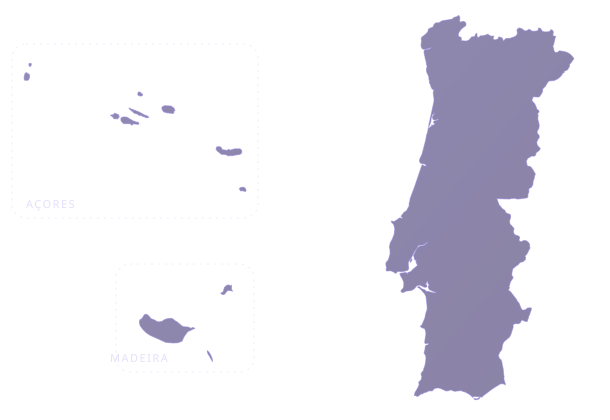

Uma só voz,
em cada igreja.
Em setembro de 2027, 2000 anos depois do batismo de Jesus, a Igreja Adventista do Sétimo Dia, no mundo inteiro, vai anunciar o Messias em conjunto. Em Portugal, essa voz precisa de pessoas: quem crie conteúdos, quem acompanhe cada interessado e igrejas prontas a receber.

O caminho de uma pessoa até à igreja
Alguém vê um conteúdo, responde a um apelo e encontra quem o acompanhe até uma comunidade local. Há três formas de fazer parte deste caminho.
-
1 · Conteúdo
Criadores de conteúdo
Vídeos, imagens, textos e música para as campanhas digitais, que levam os interessados até aos instrutores.
Quero criar conteúdos -
2 · Apelo
«Gostava de saber mais.»
Alguém responde a uma campanha e pede contacto.
-
3 · Acompanhamento
Instrutores
Primeiro contacto, conversas sobre fé, estudos bíblicos e encaminhamento para uma igreja local.
Quero ser instrutor -
4 · Comunidade
Igrejas aderentes
A igreja local liga-se ao projeto e está pronta a receber. Inscrição feita pelo diretor de Comunicação ou por quem o Conselho de Igreja indicar.
Inscrever a minha igreja